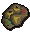

")
Prayer - Extra Features
The Monastery | Senntisten Altar | Summoning Familiars | Ghasts | The Ectofuntus | Poison Book
Prayer Restoring | Player Owned Houses | The Shades Of Mort'ton |
Paterdomus Columbarium The Skeletal Horror | Spirit Shields | Dungeoneering | Quests | Pyre Ships
Bonecrusher | Random Events
Prayer Restoring | Player Owned Houses | The Shades Of Mort'ton |
Paterdomus Columbarium The Skeletal Horror | Spirit Shields | Dungeoneering | Quests | Pyre Ships
Bonecrusher | Random Events
The Monastery

Inside there is an altar, which gives a temporary boost to your Prayer, and monks who will heal you for free. You will also be able to ask Brother Jered to enchant any holy symbols you make, as well as some monk's robes laying around that you can take.
Senntisten Altar

Summoning Familiars
Using the Summoning skill, you'll find that there are a few familiars that might be useful for training your Prayer. Of particular note is the abyssal parasite, who slows the Prayer drain you get while in the Abyss.
Ghasts
If you have completed the Nature Spirit, you will be able to train on ghasts as a way of increasing your Prayer level.

You will need to ensure that you have a blessed silver sickle and a druid pouch full of flowers, gathered using 'cast bloom' from the sickle.
You can simply walk about until a ghast attacks you, or you can use the druid pouch on a ghast to make it attackable. If you defeat it, you will receive 30 Prayer experience as well as any normal experience you would receive for engaging in combat.
More powerful ghasts exist in the deep swamps of Mort Myre, although these routes are usually only taken by experienced guides aiding villagers from Burgh de Rott in Temple Trekking. These ghasts are known to give Prayer experience in the range of 80, 110 and 140 depending on the creature you run into.
Note: If you go to the grotto and pray at the altar, you will temporarily gain 2 extra Prayer points.
For more information about surviving Mort Myre, please read the Terrain Survival Guide.
The Ectofuntus

All you need to do is grind up bones in the bone grinder on the top floor of the Ectofuntus temple - this will make bonemeal (you will need an empty pot to collect it in). Then fill up a bucket with ectoplasm from the very bottom level of the temple and return to the main floor (the one with Necrovarius and the Ectofuntus in). Click on the Ectofuntus and choose the “Worship” option, both the ectoplasm and the bonemeal will be destroyed in the process, though you will gain four times the normal amount of experience for your bones.
It is possible to use this function up to fifty-three times before having to speak with a disciple to receive your ecto-tokens (a form of currency used in Port Phasmatys). It is also possible to get more than one batch of ectoplasm and bonemeal with each trip, so make sure you use your time wisely.
The amount of experience you gain depends on the type of bones you grind.
Poison Book - Prayer of Deliverance from Poisons
 During The Great Brain Robbery you will find a Saradomin prayer book that can be used to ward off poison.
During The Great Brain Robbery you will find a Saradomin prayer book that can be used to ward off poison.
If you are poisoned: first, equip a blessed symbol of Saradomin, then simply right-click on the book and choose the “Recite-prayer” option. It will cost you some Prayer points, relative to how badly you are poisoned, but you will be cured.
Prayer Restoring
![[image]](../../img/main/kbase/items/potions/other_potions/prayerrestore_potion.gif) |
It is possible for Members to drink prayer restore or super prayer potions to restore any lost Prayer points. Please see the Herblore section of the Manual for more details. |
|  | Biscuits can be gained from any level of treasure trail, and will restore 1 prayer point (and 10-30 life points) with each bite. These are stackable (200 can be held at one time) and are untradable. |
Player Owned Houses
Chapels built in your house can be used to train Prayer as well; click here for more information.
The Shades Of Mort'ton
Once you have completed the Shades of Mort'ton quest, then you will be able to cremate shades as a way of increasing your Prayer level and receiving various rewards.
To learn how to burn shades, see the Shades of Mort'ton activity page.
The Paterdomus Columbarium
If you have completed Legacy of Seergaze, you will also be able to burn Vyrewatch remains in the Paterdomus Columbarium using pyre logs. Vyrewatch corpses can only be burnt using teak pyre logs or better.
Prayer Training in Dungeoneering
It is possible to train all of your skills while dungeoneering, and Prayer is no exception. Plenty of creatures drop bones in Daemonheim, and you can receive four times the amount of Prayer XP if you take your monster bones to an altar within Daemonheim.
- To find out more about skill doors and the basics of dungeoneering, please click here
- To find tables with Prayer requirements and XP levels, click here
Quests Giving Prayer Experience
For information on which quests reward you with prayer experience see the Prayer Rewards page.
Pyre Ships
Those that have learnt most of the Barbarian Training methods will discover a new way to boost their Prayer experience: burning pyre ships.
Click here to find out more about pyre ships.
Burning a pyre ship will grant you a bonus to your Prayer experience depending upon which type of logs you use to construct the ship. You will receive a 300% bonus to Prayer experience the next few times that you bury bones.
| Wood | Levels Required | Crafting Experience | Firemaking Experience | Number of Bones with enhanced XP |
 Wood |
11 11 |
10 | 40 | 1 |
 Achey |
11 11 |
10 | 40 | 1 |
 Oak |
25 25 |
15 | 60 | 2 |
 Willow |
40 40 |
22.5 | 90 | 2 |
 Teak |
45 45 |
26.2 | 105 | 3 |
 Arctic pine |
52 52 |
31.2 | 125 | 3 |
 Maple |
55 55 |
33.7 | 135 | 3 |
 Mahogany |
60 60 |
39.3 | 157.5 | 4 |
 Eucalyptus |
68 68 |
42.8 | 171.2 | 4 |
 Yew |
70 70 |
50.6 | 202.5 | 4 |
 Magic |
85 85 |
75.9 | 303.8 | 5 |
The Skeletal Horror
If you have completed Rag and Bone Man, Fur 'n' Seek, and both of the Odd Old Man's wish lists, you will be able to face a creature known as the skeletal horror. The first time you defeat it, you will receive 10,000 Slayer XP and 7,000 Prayer XP.
Once you've laid the skeletal horror to rest, the Odd Old Man will lay out all of its bones and set about rebuilding it (for 'research purposes', apparently), and would be thankful for your help in defeating it again, one week later, so it doesn't get out and destroy the world or something. (Bad skeletal horror, bad!)
Every time you defeat it after the first will award you with 1,250 Slayer XP and 1,000 Prayer XP. To make it easier on your legs, after completing Fur 'n' Seek, he'll even enchant your bonesack or ram skull helm, giving it slightly better stats and the ability to teleport you to his shack, once per rebuild.
Spirit Shields
The spirit shield is a reward for completing Summer's End, and can be used as it is, blessed, or combined with sigils to make it even stronger. Click here to see what each variant is capable of.
 |
Making a blessed spirit shield You can combine a spirit shield with holy elixir at a Saradomin altar, provided you have at least level 85 Prayer. In addition to the shield, you will receive 1500 Prayer experience. If you don't have the Prayer level required, you can take it to Brother Jered in the Monastery, who will charge for the remarkably strenuous effort. Holy elixir is dropped by the Corporeal Beast. |
 |
Arcane spirit shield You need 90 Prayer and 85 Smithing to make an arcane spirit shield. It is constructed by using an arcane sigil on a blessed spirit shield at an anvil (for obvious reasons, you will also need a hammer), which will also reward you with 1800 Smithing experience. Arcane sigils are dropped by the Corporeal Beast. |
 |
Divine spirit shield You need 90 Prayer and 85 Smithing to make a divine spirit shield. It is constructed by using an divine sigil on a blessed spirit shield at an anvil (for obvious reasons, you will also need a hammer), which will also reward you with 1800 Smithing experience. Divine sigils are dropped by the Corporeal Beast. |
 |
Elysian spirit shield You need 90 Prayer and 85 Smithing to make an elysian spirit shield. It is constructed by using an elysian sigil on a blessed spirit shield at an anvil (for obvious reasons, you will also need a hammer), which will also reward you with 1800 Smithing experience. Elysian sigils are dropped by the Corporeal Beast. |
 |
Spectral spirit shield You need 90 Prayer and 85 Smithing to make a spectral spirit shield. It is constructed by using a spectral sigil on a blessed spirit shield at an anvil (for obvious reasons, you will also need a hammer), which will also reward you with 1800 Smithing experience. Spectral sigils are dropped by the Corporeal Beast. |
If you find yourself unable to attach a sigil to a shield, and thus require the services of someone both skilled with an anvil and blessed with remarkable faith, you may find Brother Bordiss a useful dwarf to visit.
Bonecrusher
If you have a tendency to leave bones on the ground and not bury them, then the bonecrusher might be to your taste. This item can be bought with dungeoneering tokens from the reward trader of Daemonheim, and will automatically bury any bones that you would have received from a monster drop. The item needs only to be kept in your inventory for it to take effect.
Random Events
While training your Prayer in RuneScape, you may notice the occasional random event happening to you. They can occur at any time and any place - beware!
For more information on all Random Events please refer to our guide.
Click here to view the Prayer FAQs

|
More articles in Prayer
|
|
|
Further Help
If this article does not help you, you may find the following sections of the RuneScape site helpful:
|
|